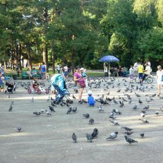
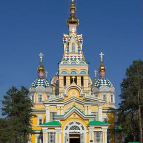
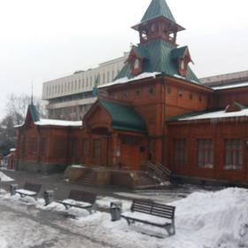
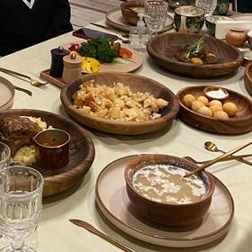
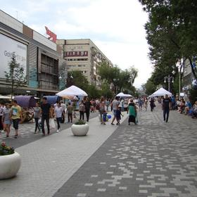
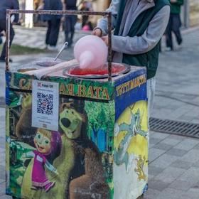

08:30🏨 อาหารเช้า1 ชม.
ร้านกาแฟย่าน Arbat
🚶 เดินจากที่พัก Arbat·1.2 กม.·15 น.

09:45🏔️ Panfilov Park1 ชม.
สวนสาธารณะใจกลางเมือง มีอนุสรณ์สถานทหาร 28 นายของกรมแพนฟิลอฟ ต้นไม้ใหญ่ปกคลุมด้วยหิมะ
📸 จุดถ่ายรูป: โดมทองตัดฟ้าหนาว มุมหน้าตรง
🚶 เดิน (อยู่กลางสวนเดียวกัน)·0.2 กม.·3 น.

10:45🏔️ มหาวิหาร Zenkov45 น.
โบสถ์ไม้สูง 56 เมตรสร้างปี 1907 ไม่ใช้ตะปูเหล็กแม้แต่ตัวเดียว รอดจากแผ่นดินไหวใหญ่ปี 1911 มาได้ทั้งที่ตึกอิฐทั้งเมืองพัง
🚶 เดิน·0.4 กม.·5 น.

11:45🏔️ พิพิธภัณฑ์เครื่องดนตรีพื้นบ้าน1 ชม.
อาคารไม้ข้างสวน เก็บเครื่องดนตรีคาซัคโบราณอย่างโดมบรา มีการสาธิตเล่นสด (เช็กวันเปิดก่อน)
📸 จุดถ่ายรูป: อาคารไม้กับหิมะกองข้างทางเดิน
🚶 เดิน·0.6 กม.·8 น.

13:00🍽️ กลางวัน — ร้านท้องถิ่น1 ชม.
ซุปซอร์ปา หรือมันตี (เกี๊ยวนึ่งไส้เนื้อ)
🚕 แท็กซี่·2.5 กม.·12 น.
14:30🏔️ มัสยิดกลางอัลมาตี45 น.
มัสยิดหลักของเมือง โดมฟ้าและหออะซานสูง 47 เมตร เข้าชมได้นอกเวลาละหมาด แต่งกายสุภาพ
🚕 แท็กซี่กลับ Arbat·1.8 กม.·10 น.

15:30🏔️ ถนนคนเดิน Arbat + ของฝาก1 ชม. 30 น.
ร้านขายของที่ระลึก งานฝีมือ และช็อกโกแลต Rakhat ของขึ้นชื่อคาซัคสถาน
🚶 เดินในย่าน Arbat·5 น.

18:30🍽️ มื้อเย็น + เตรียมของ2 ชม.
พรุ่งนี้ออกเช้าไป Charyn ต้องเก็บของและเตรียมเสื้อผ้ากันหนาวหนักกว่าในเมือง